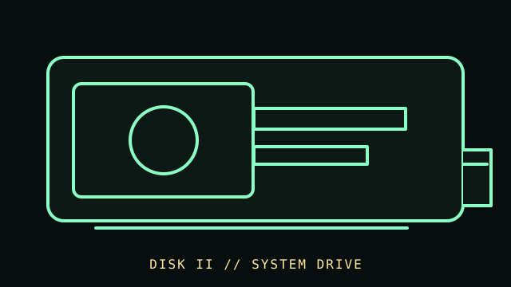

[ FLOPPY DRIVES // IDENTIFIED MODEL ]
Apple Disk II 5.25-inch Drive
Apple’s external 5.25-inch Disk II mechanism is a system-specific disk drive, not a PC-compatible bare mechanism. Its operation depends on the matching Apple II disk controller and host software.

MODEL IDENTIFICATION: Apple Disk II 5.25-inch floppy drive; verify the unit’s label, enclosure, cable, and service revision. The record distinguishes source-documented facts from model/revision-dependent behavior; it is not a compatibility guarantee.
Recorded specifications
| Catalog model | Apple Disk II 5.25-inch Drive |
|---|---|
| Device type | External 5.25-inch mechanism |
| Interface / connector | Proprietary Apple II Disk II cable/controller interface; it is not a directly interchangeable 34-pin PC floppy drive. |
| Media / formats | 5.25-inch flexible magnetic disk; disk structures and encoding are governed by the Apple II controller/software combination. No single capacity is assigned here because DOS, disk generation, and track format matter. |
| Revision caution | Confirm the complete model designation, nameplate, connector, board/firmware revision, and service-manual edition. Related family names are not proof of interchangeable parts or host support. |
Host and controller compatibility
- Use with the documented Apple II Disk II controller/interface and matching system software; do not attach it directly to a PC floppy cable.
- Drive revisions and cable/controller combinations may differ. Compare the mechanism and connector to the Apple Disk II installation/service documentation before power-up.
- Disk II media layout is Apple-system specific. A PC filesystem tool or generic USB floppy unit is not a substitute for a verified Apple II acquisition path.
Safe preservation and cleaning
Keep the mechanism de-energized during inspection. Do not insert moldy, sticky, creased, or visibly contaminated disks; use the service procedure for the exact mechanism before cleaning heads or rails. Never clean a disk surface with household solvents.
For preservation, photograph labels and connector/board markings before service; document the host, controller, software, settings, and observed condition. Keep original media or raw captures intact and verify checksummed copies before making derivatives.
Manufacturer manuals & archival references
- Apple Disk II Floppy Disk Subsystem Installation and Operating ManualArchived primary manual for installation and operating context; check the scanned edition against the hardware revision.
- Apple Disk II Technical ProceduresArchived service documentation for Disk II system identification and repair.
- Library of Congress — Digital format sustainabilityPreservation planning reference; it is not a drive service manual.
Archive scans and project pages may cover a family or a particular revision. The full model/revision-specific manufacturer manual takes precedence. Capacity or recording mode is omitted where it cannot be tied to the cited model and format.